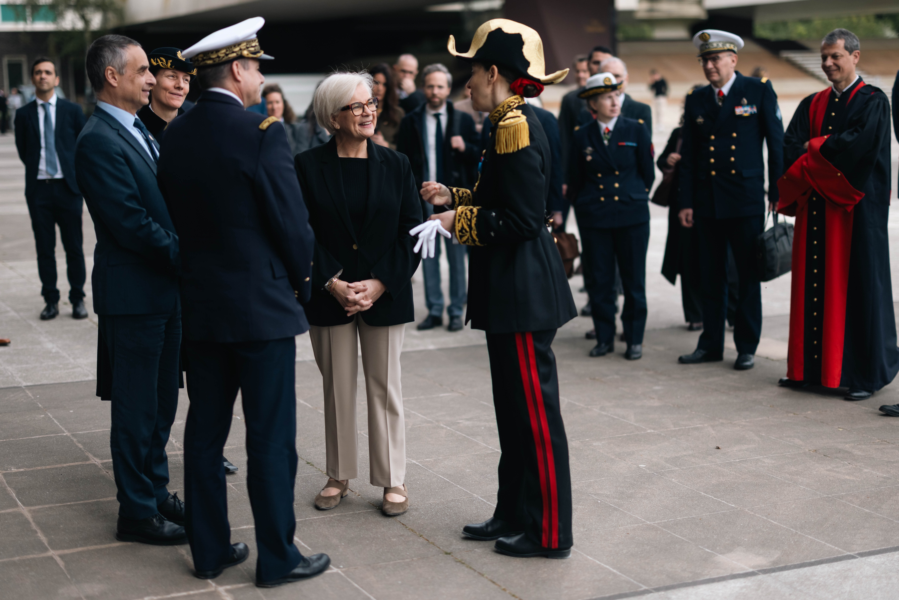
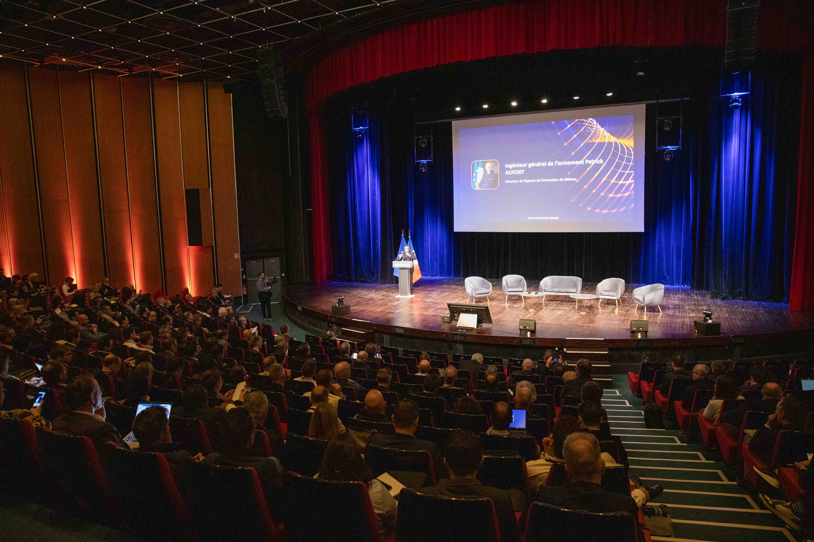

Agence de l'innovation de défense : tracer la voie du quantique français
Communiqué · Publié le 27 avril 2026

Le quantique, clé de voûte de la souveraineté
Calculs hyper-puissants, capteurs ultra-précis ou encore communications inviolables : les technologies quantiques sont désormais perçues comme le nerf de la guerre. Face au retour des conflits de haute intensité et à l'accélération frénétique des technologies de rupture, maîtriser ces applications est devenu un enjeu absolu de souveraineté et de supériorité opérationnelle pour la France.
L'union sacrée entre civils et militaires
L'enjeu de ce sommet était clair : faire bloc. En réunissant les acteurs stratégiques nationaux sous l'égide de l'AID, l'ambition est de décloisonner la recherche. L'objectif final ? Bâtir un écosystème technologique français résilient et hybride, où les avancées civiles viennent directement nourrir les capacités de défense de demain.
L'Agence de l'innovation de défense (AID) a clôturé avec succès le premier Forum Quantique dédié à la défense, organisé à l'École polytechnique. Cet événement inédit, placé sous le haut patronage de Madame Catherine Vautrin, ministre des Armées et des Anciens combattants, a rassemblé près de 500 participants, 25 exposants et 30 intervenants, illustrant l'engagement déterminant du ministère et de l'ensemble de l'écosystème pour les technologies quantiques.
Véritable champ de confrontation géostratégique, leur importance stratégique est comparable à celle de l'arme nucléaire ou de l'accès à l'espace.
La matinée a été ouverte par l'ingénieur général de l'armement Patrick Aufort, directeur de I'AID. Madame Catherine Vautrin, ministre des Armées et des Anciens Combattants, a souligné l'enjeu stratégique que représente le quantique partout dans le monde, rappelant que << dans cette compétition, la France dispose d'atouts majeurs ».
Patrick Pailloux, délégué général pour l'armement, a quant à lui insisté sur le rôle de la DGA dans l'anticipation des ruptures technologiques notamment via les travaux qu'elle conduit dans le domaine des technologies quantiques depuis une vingtaine d'années. Il affirme que « celui qui n'aura pas cette maîtrise sera déclassé. Il n'y a donc pas de scénario dans lequel la France loupe ce train >>.
Cette journée a été rythmée par des conférences, des ateliers et des tables rondes animées par des experts, ainsi que par des rencontres avec les armées, directions et services et leurs partenaires Ces échanges fructueux ont mis en lumière les avancées et les perspectives offertes par les technologies quantiques dans le domaine de la défense, renforçant la filière quantique française aux côtés des acteurs majeurs de la base industrielle de défense (BITD), de l'industrie civile, de la recherche et des investisseurs.

. Source : © Nicolas Cotto / Défense / DICoD
Une opportunité pour présenter les missions de deux entités relevant de l'Agence de l'innovation de défense, dans le cadre des annonces ministérielles de juin dernier :
le Laboratoire quantique défense, dont l'objectif est d'éclairer par la pratique l'ensemble des applications d'intérêt défense des nouvelles technologies quantiques; le Campus quantique défense, lancé lors de ce forum, vise quant à lui à fédérer les acteurs du ministère, les chercheurs, les industriels de défense et du monde civil, ainsi que les investisseurs, autour des enjeux de défense et de souveraineté.
Sa mission est d'accélérer la transition vers une utilisation opérationnelle du quantique de défense.

. Source : © Nicolas Cotto / Défense / DICoD
"Notre enjeu est de faire monter en maturité les technologies nécessaires aux futurs grands programmes, et nous avons eu de nombreux exemples aujourd'hui, mais aussi de rester agile pour identifier et déployer les technologies du civil qui évoluent très vite, en réduisant les délais entre la détection et l'intégration de l'innovation " a souligné l'ingénieur général de l'armement Patrick Aufort, directeur de l'Agence de l'innovation de défense lors de la clôture du forum quantique défense.